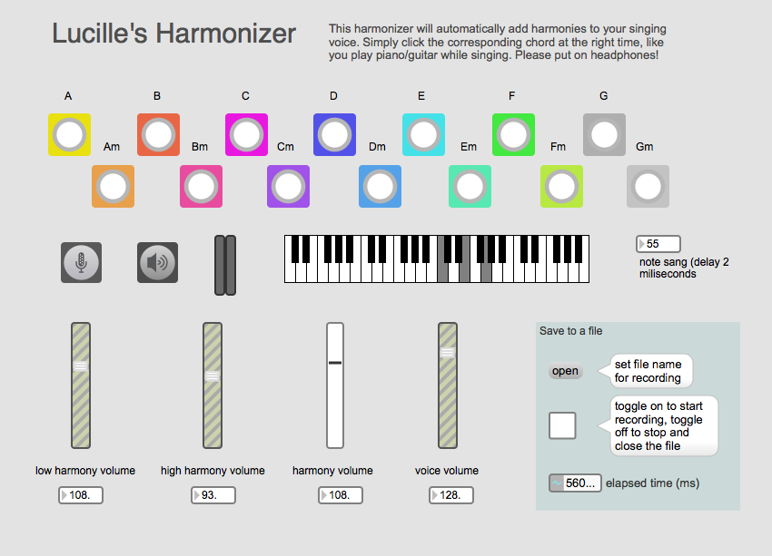

I was in a studio eight years ago recording a song, and I remembered I wanted to have multiple harmonies that go with my voice at the same time. It was a very time consuming process to record multiple tracks while I had to learn all different harmonies separately. It was not easy. And I believe there’s a better way.
My harmonizer (MaxMSP) takes your singing voice as an input, and output your original voice together with two other harmonies in real time. The user interface looks like this:

You can download the application at the bottom of the page. Before starting the harmonizer, please insert headphones so that the audio output won’t be feeded back as input, or else it will generate infinite sound that will definitely hurt.
To start the harmonizer, click on the voice icon or the play button, as they turned on and off simultaneously. The two small vertical voice bar is an indication whether the input voice is picked up by the harmonizer. The piano keys display the notes played when a chord button is hit. The number box on the right side of the piano keys displays the instant approximate pitches of the input voice in midi format. It’s the best for users to sing a middle C note and see whether or not the number box displays 60 before hand. If it does not, the user is off tune.
The chords on the top determines what harmonies it will generate next. When the user starts singing, he/she has to click on the corresponding chords at the right time, as if he/she is playing guitar/piano while singing. If the user is off tune, or presses the wrong chords, the resulting harmonies are guaranteed to sound very weird.
The four volume bars at the bottom controls the volume of the output. The most left bar is the volume for the low harmony, the second left is for that of the high harmony. The third bar is to control the two generated harmonies together, with the high harmony slightly quieter than the low one. The rightmost volume bar controls the volume of the original voice.
Users can also save the output sound into an aiff sound file on the bottom right box. Users can open a file, toggle when to start recording and when to stop and close the file.
For stuff that goes under the hood, I used Tristan Jehan's pitch~ object to extract and approximate the note sang. I also used pfft~ object to do pitch shifting in frequency domain for the low and high harmonies. One challenge I had was to pick the right object for pitch approximation. I first went with fzero~, but whenever the input frequency changes, which is very common for human voice, it outputs a new midi note. So things include vibrato will result in constantly changing output midi values whereas the correct pitch is suppose to be “cooked” and stable. Then I tried analyzer~ and fiddle~, and in the end I end up with pitch~ and was quite satisfied with the result.
Generating random harmonies is easy. Generating harmonies that goes well with the song progression in real time is hard. At first I set my bar too high, thinking that it must be really hard for any non musicians to use this correctly, so I tried to compute the chords progression in real time such that users don’t need to press the right chord at the right time. However this is something I will dig into in the future. But scratch. Too hard for now. Here it generates harmonies based on input chords, which is not that easy anyways, and it involves some amount of work to get this working properly. However if it's used correctly, and the voice is on pitch, the resulting sound is pretty amazing.
Notice that I omitted all # and b chords. The reason is that if I include them, I will have too many chord buttons on the screen, and it really start to get confusing. Trust me I tried it, and I deleted them as a result.
Here are the challenges I couldn’t solve up to now, and will be future work:
- I couldn’t make the high harmony sound not so much of a chipmunk. So there’s the reason why it sets the high harmony volume slightly quieter.
- The pitch approximation of voice does not know which notes are important and which ones are not. Thus if the user is transitioning between one note to another, and the transition is slow enough to be considered as stable, it outputs the “wrong” notes to the pitch shifter, which acts accordingly and the resulting output sometimes sounds distorted.
- The two harmony have a slight delay in output, and thus if users sing very fast song with constant changes in pitch, the delay becomes quite disturbing and sometimes results in wrong harmonies.
Here are several samples of me singing with the harmonizer. Please put on your headphones to hear the harmonies better. It is hard to look at the lyrics and the chords and pressing the buttons and being on pitch while hearing the harmonies at the same time. It was done one shot with my apple earphone so quality is bad. So DON’T JUDGE!
- Everytime: I'm a little off tune. It's hard to stay on tune when hearing your own voice replicas + singing lightly.
- Some nights: You can definitely hear the harmonies being slightly delayed here.
- Bohemian: last note’s low harmony is really off!
- Somewhere over the rainbow: forgot my lyrics, but really great with the harmonizer.
Downloads
download lucille_harmonizer_1.0.zip
Note that this software is currently available for Mac OS only.